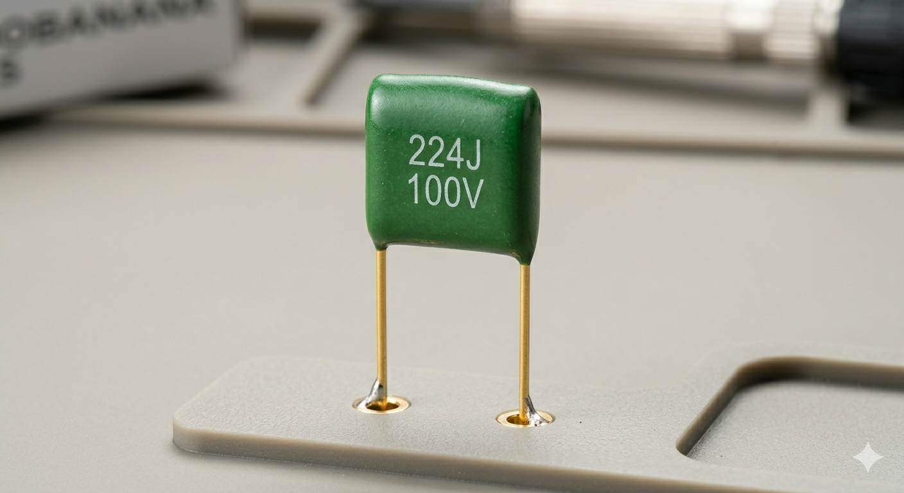

MEMAHAMI APA ITU KAPASITOR
Mengenal Kapasitor Elektrolit (Elco) dan Dunia Kapasitor
Apa Itu Kapasitor Sebenarnya Lalu apa fungsi nya?
Dalam sirkuit elektronika, kapasitor menduduki posisi yang sangat penting bersama resistor dan induktor. Jika resistor berfungsi sebagai penghambat, maka kapasitor berfungsi sebagai penyimpan energi listrik sementara.
1. Apa itu Kapasitor Elco?
Kapasitor Elektrolit, atau yang sering disingkat Elco (Electrolytic Capacitor), adalah jenis kapasitor yang memiliki polaritas (memiliki kutub positif dan negatif).
2. Fungsi Utama Kapasitor Elco
Elco memiliki peran spesifik dalam rangkaian, terutama pada bagian catu daya (power supply):
- 1. Filter (Penyaring): Fungsi paling umum adalah menyaring arus AC agar menjadi DC yang rata (smooth). Elco akan membuang "riak" (ripple) pada tegangan sehingga arus yang keluar lebih stabil.
- 2. Kopling (Penghubung): Menghubungkan satu bagian rangkaian ke bagian lain tanpa melewatkan arus DC, namun tetap membiarkan sinyal AC lewat.
- 3. Penyimpan Cadangan Energi: Dalam rangkaian audio, Elco besar sering digunakan untuk menyimpan cadangan energi saat perangkat membutuhkan hentakan daya mendadak (seperti suara bass yang berat).
- 4. Pembangkit Pulsa (Timing): Jika dikombinasikan dengan resistor, Elco bisa menentukan lama waktu pengisian dan pengosongan muatan, yang sering digunakan dalam rangkaian lampu kedip atau timer.
3. Jenis-Jenis Kapasitor Lainnya
Selain Elco, ada berbagai jenis kapasitor yang dikelompokkan berdasarkan bahan dielektriknya:
A. Kapasitor Keramik

Karakteristik: Tidak memiliki polaritas (bebas pasang bolak-balik). Nilai kapasitasnya kecil (Pico Farad - Nano Farad).
Fungsi: Sering digunakan pada rangkaian frekuensi tinggi untuk membuang gangguan (noise) atau sebagai bypass.
B. Kapasitor Mylar (Milar)

Karakteristik: Kapasitor Milar (sering disebut sebagai kapasitor polyester), yang dimana adalah jenis kapasitor yang menggunakan film polyester sebagai bahan dielektriknya. Berikut adalah rincian mengenai jenis kapasitor tersebut
1. Karakteristik Utama
Non-Polar: yang dimana adalah jenis kapasitor yang tidak memiliki polaritas seperti (Positif) atau (Negatif), sehingga bisa di pasang bolak-balik.
Stabilitas Tinggi: Yang dimana kapasitor jenis ini memiliki stabilitas yang lebih baik terhadap perubahan suhu dan frekuensi dibanding kapasitor keramik biasa.
Fungsi: kopling (Coupling) Menghubungkan sinyal audio dari satu block rangkaian ke block lainnya yang dimana bekerja sebagai filtering atau memblokir arus searah (DC)